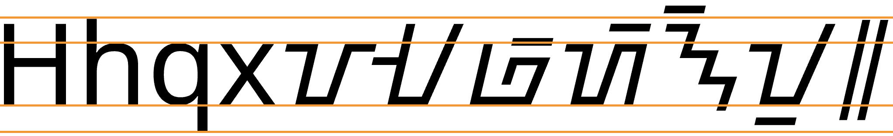

This page brings together basic information about the Buhid script and its use for the Buhid language. It aims to provide a brief, descriptive summary of the modern, printed orthography and typographic features, and to advise how to write Buhid using Unicode.
Note: Given the difficulty in finding term lists in written in the Buhid orthography, the examples cited here were derived manually by applying the rules of the orthography to Latin transcriptions. Buhid is a simple enough script that these should be reliable, except that there is a question around the representation of the consonant f. In this page we represent that sound using ᝉ (click the name for more information). This tallies with usage for Baybayin.
Sample
Select part of this sample text to show a list of characters, with links to more details.
Change size:
44px
Source: Wikipedia, Buhid urukays from The Mangyans of Mindoro by Violeta B Lopez.
Usage & history
The Buhid language is spoken by around 11,000e Mangyans in the island of Mindoro, Philippines.
The Buhid script is currently endangered, and authorities in the area where it is spoken are trying to encourage its use by the younger generation. One particularly common former use was for writing ambahan, traditional poetry.
ᝊᝓᝑᝒ
When the Spaniards arrived in the Philippines in the 1500s they were surprised to find that the inhabitants were largely literate in scripts of which Buhid is one survivor. The scripts have the characteristics of Brahmi-derived scripts, but the pathway that led to this orthography is not clear. It is thought that it may lead via Java and have arrived in the Philippines between the 10th and 14th centuries.me
The Buhid script is an abugida. Consonants carry an inherent vowel which can be modified by appending vowel signs to the consonant. See the table to the right for a brief overview of features for the modern Buhid orthography.
Buhid text runs left-to-left in horizontal lines, and is unicameral.
Buhid has 15 consonant letters, but they are only used to indicate syllable onsets. Syllable codas are not written. This can lead to some word ambiguity, and also means also that the text doesn't indicate any consonant clusters. ❯ consonants
The Buhid orthography is an abugida with one inherent vowel, generally pronounced a, but sometimes ʌ. Vowels are written using only 2 vowel signs (for 4 sounds), and no consonants. ❯ vowels
Buhid has 3 independent vowels, used for vowels that are preceded by a glottal stop. These may occur word-initially or word-medially. ❯ standalone
Character index
Letters
Show
Consonants
ᝃ␣ᝄ␣ᝅ␣ᝆ␣ᝇ␣ᝈ␣ᝉ␣ᝊ␣ᝋ␣ᝌ␣ᝍ␣ᝎ␣ᝏ␣ᝐ␣ᝑ
Vowels
ᝀ␣ᝁ␣ᝂ
Combining marks
Show
Vowels
ᝒ␣ᝓ
Punctuation
Show᜵␣᜶
Items to show in lists
Phonology
The following represents the repertoire of the Buhid language.
Click on the sounds to reveal locations in this document where they are mentioned.
Phones in a lighter colour are non-native or allophones. Source Barham.
Vowel sounds
Plain vowels
a and ʌ are sometimes interchangeable.
Consonant sounds
labial
dental
alveolar
palatal
velar
glottal
stop
pb
td
kɡ
ʔ
fricative
f
s
xɣ
h
nasal
m
n
ŋ
approximant
w
l
j
trill/flap
r
Tone
Buhid is not a tonal language.
Structure
Barhammb reports 2 syllable types:
CV | CVC
These are combined into words with the following structures:
CVC | CVCV | CVCVC |CVCCVC | CVCCV
Barham reportsmb,9 that certain Tagalog words with the structure CVCVC have corresponding words in Buhid with the structure CVC where there is a tendency to lengthen the single vowel, but only in slow speech.
The following restrictions apply:
Onset
p only appears in loan words. Otherwise all consonants can appear.
Nucleus
Includes any vowel.
Coda
Can be any consonant except f and h.
Barham (p8) provides additional detail about which consonant sequences can appear in clusters.
Vowels
The following features are not found in the Buhid orthography.
a following a consonant is not written, but is seen as an inherent part of the consonant letter, so ka is written by simply using the consonant letter.
Combining marks used for vowels
ᝃᝒ
kiU+1743 LETTER KA + U+1752 VOWEL SIGN I
Buhid uses only two combining marks for vowels when it is necessary to override the inherent vowel.
ᝒ␣ᝓ
Each vowel sign represents one of 2 sounds. 1752 represents either the sound i or the sound e; 1753 represents either o or u.
In principle, the glyphs look the same, and the distinction is made by position: i ~ e goes above the base, and o ~ u goes below. However, in practise, although the relative height distinction is always preserved, the way the vowel sign connects with the base varies from consonant to consonant. The differences are significant enough to make it worthwhile to show all possible combinations in the table below.
Consonant
No vowel sign
With i/e
With o/u
p
ᝉ
ᝉᝒ
ᝉᝓ
b
ᝊ
ᝊᝒ
ᝊᝓ
t
ᝆ
ᝆᝒ
ᝆᝓ
d
ᝇ
ᝇᝒ
ᝇᝓ
k
ᝃ
ᝃᝒ
ᝃᝓ
ɡ
ᝄ
ᝄᝒ
ᝄᝓ
s
ᝐ
ᝐᝒ
ᝐᝓ
h
ᝑ
ᝑᝒ
ᝑᝓ
m
ᝋ
ᝋᝒ
ᝋᝓ
n
ᝈ
ᝈᝒ
ᝈᝓ
ŋ
ᝅ
ᝅᝒ
ᝅᝓ
w
ᝏ
ᝏᝒ
ᝏᝓ
r
ᝍ
ᝍᝒ
ᝍᝓ
l
ᝎ
ᝎᝒ
ᝎᝓ
j
ᝌ
ᝌᝒ
ᝌᝓ
Placement of vowel signs with Buhid consonants.
Standalone vowels
ᝀ
aU+1740 LETTER A
ᝀ␣ᝁ␣ᝂ
Vowels at the beginning of a word or following another vowel are actually transcribed in IPA with a preceding glottal stop (ʔ), but they are written using one of 3 independent vowel letters.
As with the vowel signs, these letters each represent one of two possible sounds. (See the box above.)
ᝀᝊᝓᝑ
ᝁᝇᝓ
ᝄᝓᝂ
Vowel sounds to characters
This section maps Buhid vowel sounds to common graphemes in the Buhid orthography.
The left column shows dependent vowels; the right column shows independent vowel letters.
Sounds listed as 'infrequent' are allophones, or sounds used for foreign words, etc.
Plain vowels
i
1752
ᝐᝒᝆ
1741
ᝁᝇᝓ
u
1753
ᝎᝓᝆᝓ
1742
ᝂᝇᝓ
e
1752
ᝈᝎᝒ
1741
o
1753
ᝐᝓᝑᝓ
1742
ᝄᝓᝂ
a
Inherent vowel
ᝆᝊᝓ
1740
ᝀᝊᝓᝑ
ʌ
Inherent vowel
ᝇᝆ
1740
ᝀᝊᝐ
Consonants
The following features are not found in the Buhid orthography.
There are no repertoire extensions to cover loan words, etc.
There is no mechanism to indicate gemination or consonant lengthening.
Consonant clusters occur phonetically where syllables join but not in writing, due to omission of syllable codas in writing.
Basic consonants
Buhid consonants are few and simple. There is no repertoire extension mechanism.
ᝉ␣ᝊ␣ᝆ␣ᝇ␣ᝃ␣ᝄᝐ␣ᝑᝋ␣ᝈ␣ᝅᝏ␣ᝍ␣ᝎ␣ᝌ
ᝃ may be pronounced x when word-medial and before a vowel; likewise, ᝄ may be pronounced ɣ.
The f phoneme
The phonetic transcriptions by Barhammb indicate common use of the phoneme f, but no character for that sound exists in the Buhid Unicode block. The Unicode proposal document mentions a possible character for f introduced during a script reform, but doesn't propose anything because it is 'wanting attestation'. Room was left in the block for later additions, if necessary.
It has been difficult to find evidence of how this sound is written, but Satots mentions that in Philippine Latin orthography f is usually written as p. This page therefore uses 1749 to represent this sound. This needs to be checked against actual usage.
Onsets
Buhid syllable onsets are straightforward. They don't involve consonant clusters.
Finals
Like some other neighouring scripts, the syllable codas are not written in the Buhid orthography. This, of course, can lead to a certain amount of ambiguity. Examples:
ᝄᝋ
ᝏᝐ
Consonant clusters
Buhid has no conjuncts or other special mechanisms for handling consonant cluster, which only occur normally when a syllable with a code precedes a syllable with a consonant onset.
Consonant sounds to characters
This section maps Buhid consonant sounds to common graphemes in the Buhid orthography.
Syllable-final consonants are never written. The right-hand column shows the shape alone, combined with vowel sign I, and combined with vowel sign U, respectively.
Click on a grapheme to find other mentions on this page (links appear at the bottom of the page). Click on the character name to see examples and for detailed descriptions of the character(s) shown.
Sounds listed as 'infrequent' are allophones, or sounds used for foreign words, etc.
Stops
p
1749
ᝉᝃᝓ
ᝉ ᝉᝒ ᝉᝓ
b
174A
ᝊᝄᝓ
ᝊ ᝊᝒ ᝊᝓ
t
1746
ᝆᝊᝓ
ᝆ ᝆᝒ ᝆᝓ
d
1747
ᝇᝄ
ᝇ ᝇᝒ ᝇᝓ
k
1743
ᝃᝏ
ᝃ ᝃᝒ ᝃᝓ
ɡ
1743
ᝄᝓᝂ
ᝄ ᝄᝒ ᝄᝓ
Fricatives
f
1749This has to be checked!
ᝉᝉ
ᝉ ᝉᝒ ᝉᝓ
s
1750
ᝐᝓᝎ
ᝐ ᝐᝒ ᝐᝓ
x
1743 when word-medial and followed by a vowel.
ᝃᝃᝒᝆ
ᝃ ᝃᝒ ᝃᝓ
ɣ
1744 when word-medial and followed by a vowel.
ᝀᝄᝓ
ᝄ ᝄᝒ ᝄᝓ
h
1751
ᝑᝓᝋᝒ
ᝑ ᝑᝒ ᝑᝓ
Nasals
m
174B
ᝋᝒᝊᝓᝎᝓ
ᝋ ᝋᝒ ᝋᝓ
n
1748
ᝈᝓᝋᝍᝓ
ᝈ ᝈᝒ ᝈᝓ
ŋ
1745
ᝅᝒᝉᝓ
ᝅ ᝅᝒ ᝅᝓ
Other sonorants
w
174F
ᝄᝎᝏᝒ
ᝏ ᝏᝒ ᝏᝓ
r
174D
ᝍᝒᝍᝓ
ᝍ ᝍᝒ ᝍᝓ
l
174E
ᝎᝓᝆᝓ
ᝎ ᝎᝒ ᝎᝓ
j
174C
ᝐᝒᝌᝓ
ᝌ ᝌᝒ ᝌᝓ
Numbers
The Buhid Unicode block doesn't have a set of native digits.
Text direction
Buhid text runs left to right in horizontal lines.
Eversonme reports that the writing often runs bottom to top on lines that progress from left to right. However, the letter glyphs are rotated in this case, so this is simply a rotation of the medium, rather than a different writing direction. It makes it easier to fit the writing on bamboo strips.
The following features are not found in the Buhid orthography.
Buhid text is not cursive (ie. joined up like Arabic).
Letters do not interact, so no context-based shaping is required.
No base letter has more than one combining mark attached to it.
The orthography has no case distinction, and no special transforms are needed to convert between characters.
This section brings together information about the following topics:
writing styles;
cursive text;
context-based shaping;
context-based positioning;
baselines, line height, etc.;
font styles;
case & other character transforms.
Buhid letters don't interact with each other, but the placement of the vowel signs requires context-sensitive placement, and in some cases reshaping of the letter. The various combinations are shown in dependent_vowel_table.
Buhid has no multiple combining marks, or other shaping to consider.
Letterform slopes, weights, & italics
tbd
Since it is very hard to find any printed examples of Buhid text, it is likely that there is no standard approach to the use of oblique and bold forms, if they are used at all. The Noto Buhid font has only a regular face.
Graphemes
Buhid is a simple orthography and typographic units can be easily segmented using grapheme clusters.
Phrase, sentence, and section delimiters are described in phrase.
Grapheme clusters
Base Combining_mark*
Buhid typographic units consist of a letter or a letter with a single combining mark (one of two vowel signs). Both of these units fit the definition of a grapheme cluster.
As previously noted, syllable codas are not written in Buhid text, and so the segmentation only captures onsets and the syllable nucleus.
Punctuation & inline features
Word boundaries
Words are separated by spaces.
Phrase & section boundaries
᜵␣᜶
Buhid uses ᜵ for a short pause, and ᜶ for a longer or sentence-like pause. It may also be used at the end of a poem.
phrase
᜵
sentence
᜶
Bracketed text
tbd
Quotations & citations
tbd
Emphasis
tbd
Abbreviation, ellipsis & repetition
tbd
Inline notes & annotations
tbd
Other punctuation
tbd
Other inline text decoration
tbd
Line & paragraph layout
Line breaking & hyphenation
tbd
In-word line-breaking
tbd
Line-edge rules
As in almost all writing systems, certain punctuation characters should not appear at the end or the start of a line. The Unicode line-break properties help applications decide whether a character should appear at the start or end of a line.
Buhid uses the so-called 'alphabetic' baseline, which is the same as for Latin and many other scripts.
Buhid letters vary slightly in height but are mostly around the same, with no ascenders or descenders. Vowel signs may appear above or below some letters, but these are on horizontal dashes.
To give an approximate idea, fig_baselines compares Latin and Buhid glyphs from the Noto Sans font. The basic height of Buhid letters is typically around the Latin x-height, however some taller letters and combining marks can reach just beyond the Latin ascenders (but not the descenders), creating a need for slightly larger line spacing.

Font metrics for Latin text compared with Buhid glyphs in the Noto Sans Buhid font.
Counters, lists, etc.
tbd
Styling initials
tbd
Page & book layout
This section is for any features that are specific to Buhid and that relate to the following topics:
general page layout & progression;
grids & tables;
notes, footnotes, etc;
forms & user interaction;
page numbering, running headers, etc.
{kind=link}